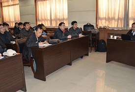
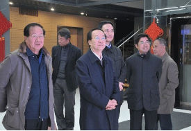
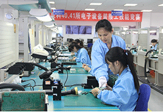
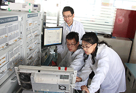

两学一做│中电仪器领导班子带好头、起好步 2016-05-20
日前，国家电投中央研究院与中国电科41所签署战略合作框架协议，就太阳能光伏、光热、风能等新能源领域的新型设备研制、检测数据分析平台开发、科研开发、人员培训、智库建设和公共服务平台建设开展广泛合作，充分整合各自资源，优势互补，资源共享，共同发展...
查看详细>>

毛远建到联系点中电仪器调研 2016-05-20
2016年3月30日，中国电科党组成员、纪检组组长、副总经理毛远建到联系点中电仪器公司就企业化改革进展情况、党建工作、“四风”回头看以及发展中存在的困难和问题进行调研。在中电仪器董事长李立功的陪同下，毛远建首先来到依爱电子产业园。在孵化养殖设备总装车间，他详细了解现代孵化...
查看详细>>
中电仪器：不断提升党建工作价值创造力 2016-05-20
近年来，我国仪器仪表工业生产总值均以20%以上的增幅快速成长，随着国家十一五、十二五规划正式将测量仪器列入规划范围，国家战略行新兴产业将测量仪器作为支撑专项，以2010年国内生产总值的397983亿元为基准，“十二五”期间增长率为7%，2015年末战略性新兴产业增加值为44655亿元...
查看详细>>

持之以恒反“四风”，认真开展 “回头看” 2016-05-20
4月15日，大连海事大学-中国电科第41研究所“射频与微波测试技术联合实验室”揭牌仪式在我校信息科学技术学院会议室举行。信息科学技术院长王国峰教授、教务处副处长李春野、信息科学技术副院长付先平教授、联合实验室主任房少军教授、中电41所经营中心主任陈坤峰...
查看详细>>

左群声一行来中电仪器调研指导 2016-05-20
2016年3月4日、5日， 中电科仪器仪表有限公司集中开展了中层管理人员2015年度述职述廉工作。会上，公司领导班子组成考核领导小组，逐一听取首席科学家、首席专家和全体中层管理人员的述职报告，并就各部门相关工作进行了现场质询并提出要求。会议由刘宝粮副书记主持...
查看详细>>
 丨 登录 丨 注册
丨 登录 丨 注册


 青岛：地址：山东省青岛市黄岛区香江路98号
青岛：地址：山东省青岛市黄岛区香江路98号